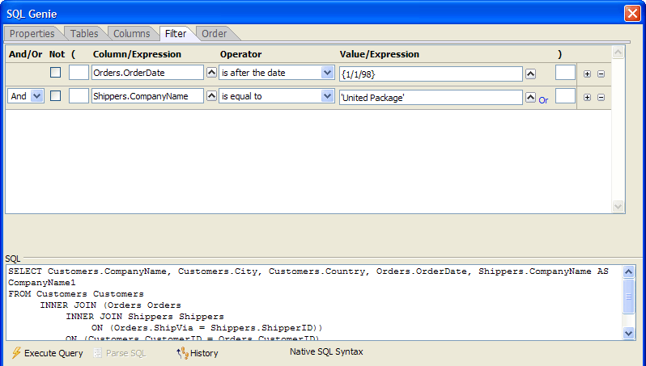

SQL Genie Filter Tab
The Filter tab of the SQL Genie defines the expressions that limit the records that your SQL SELECT statement will return.

Any time that the  Execute Query
button is enabled, you may click it to see a sample of the records that
the query will return. At any time you may click the
Execute Query
button is enabled, you may click it to see a sample of the records that
the query will return. At any time you may click the  History button to see a list of SQL statements previously
created in this session in the <span class=Screen>SQL History Dialog</span>.
History button to see a list of SQL statements previously
created in this session in the <span class=Screen>SQL History Dialog</span>.
Selecting the Records to Appear in the Report
The WHERE clause of a SQL SELECT statement filters the records that will be returned. as the illustration above shows, a WHERE clause may have multiple parts, each of which evaluates to a logical value, separated by AND or OR keywords. In the example above, only records where Customers.Country <> 'USA' and Orders.OrderDate < {1998-01-01} will be returned.
There are 2 methods of generating a WHERE clause.
Directly enter it into the SQL text box.
Use the genie controls at the top of the dialog to construct it
Using the Genie Controls
To the right of the Field\Expression column click to display the <span class=Screen>Select Column or Expression</span> dialog.
Create an expression that references one or more columns and click OK.
Select an entry from the Operator list.
Depending on the operator you selected, To the right of the Value\Expression column click to display the <span class=Screen>Specify a Value or Expression</span> dialog.
Optionally, place matching parentheses to the left and right sides of the expression.
Optionally, select the Not checkbox to invert the logic of the expression.
Optionally, click to add another part to the WHERE clause.
Select "And" or "Or" from the list box at the left side of the second and subsequent parts of a multi-part expression.
Optionally, click to remove a part of the WHERE clause.
See Also